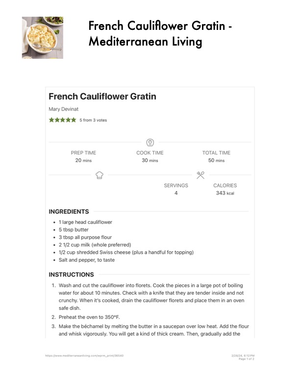

French Cauliflower Gratin -

Original cookbook page 553
Ingredients
- 1 large head cauliflower
- 5 tbsp butter
- 3 tbsp all purpose flour
- 2.1/2 cup milk (whole preferred)
- 1/2 cup shredded Swiss cheese (plus a handful for topping)
- Salt and pepper, to taste
Instructions
- https:/fiwy Wash and cut the cauliflower into florets. Cook the pieces in a large po water for about 10 minutes. Check with a knife that they are tender ins crunchy. When it's cooked, drain the cauliflower florets and place then safe dish. . Preheat the oven to 350°F. . Make the béchamel by melting the butter in a saucepan over low heat. and whisk vigorously. You will get a kind of thick cream. Then, gradual mediterraneanliving.com/wprm_print/36540
Recipe #553 from collection